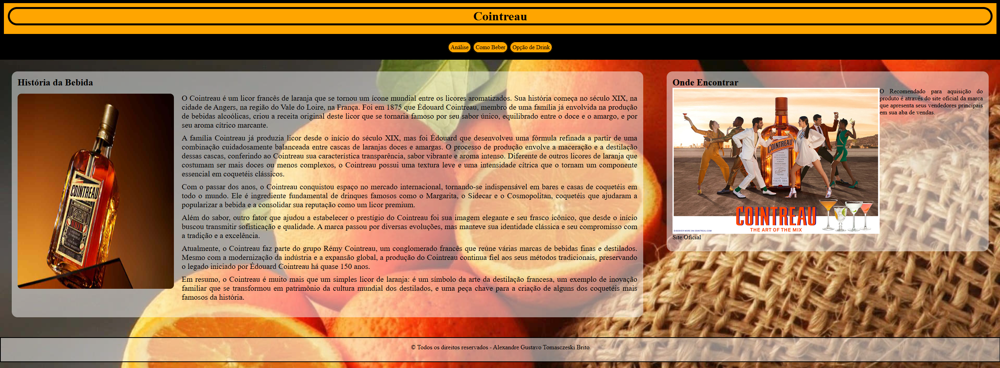
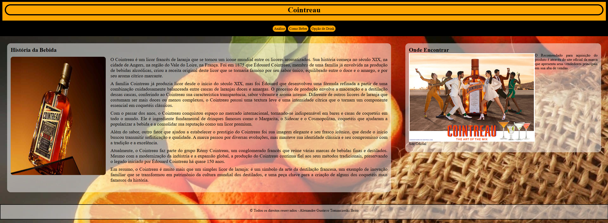

Alexandre Gustavo Tomasczeski Brito
Portifólio
BanaMaco é um projeto-conceito que simula o site de um restaurante fictício com uma identidade visual retrô, neutro e original. Desenvolvido inteiramente com HTML e CSS puro, o objetivo foi explorar o uso criativo de estruturas de layout e menus navegáveis para compor uma interface visualmente marcante e funcional.
Este projeto reflete minha capacidade de aliar técnica com senso estético, criando uma experiência de navegação fluida e intuitiva. Através de grades e posicionamentos bem definidos, cada elemento visual foi pensado para representar dinamismo e personalidade, destacando meu domínio sobre propriedades de posicionamento, responsividade e estilização sem o uso de frameworks.
BanaMaco SiteO site Cointreau foi idealizado como uma apresentação digital de produto com foco em sofisticação e clareza na disposição das informações. Nele, simulei um espaço institucional de uma marca de bebidas, utilizando recursos como background fixo, camadas translúcidas e organização em seções harmoniosas para transmitir profissionalismo e elegância.
Com HTML e CSS puro, demonstrei domínio da estrutura semântica e da estilização moderna, incorporando boas práticas como uso de grid, layout e interações suaves. Este projeto evidencia minha preocupação com legibilidade, acessibilidade e experiência do usuário, servindo como vitrine de uma abordagem profissional para páginas institucionais ou de portfólio comercial.
Cointreau Site 
